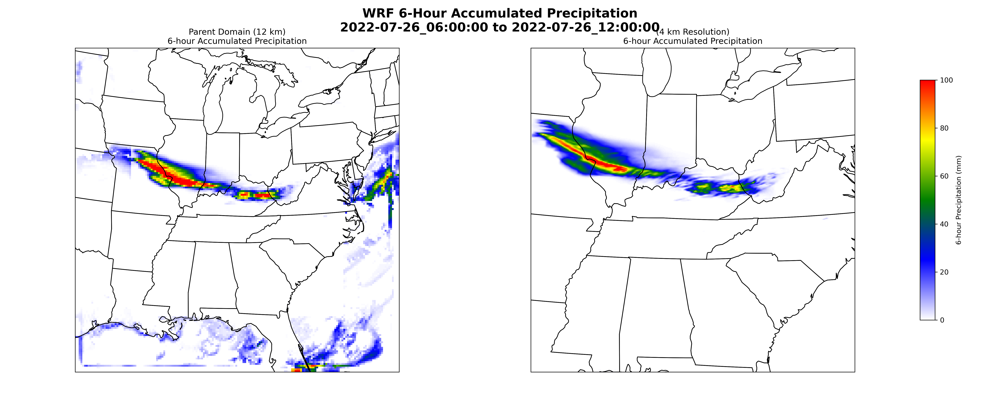

Primary Research Projects
Primary Research Projects

M.S. Thesis | NSF EPSCoR CLIMBS
Climatology and Future Projection of Mesoscale Severe-Storm Environments in the Ohio River Basin
ERA5 reanalysis, NOAA Storm Events, downscaled CMIP6 simulations, and Random Forest classification for severe-storm environments.

Numerical Weather Prediction
WRF Simulation of the July 2022 Central Appalachian Flood Event
WRF/WPS simulation and precipitation verification for the July 26-27, 2022 Central Appalachian flood event.

Hydroclimatology Manuscript
A Comparison of Atlas 14 to Precipitation Frequency Statistics Derived from the Kentucky Mesonet
Comparison of Kentucky Mesonet precipitation-frequency estimates with NOAA Atlas 14 using 5-minute observations.

Climate Extremes | Ghana
Historical Heatwave Analysis in Ghana
Manuscript analyzing heatwave prevalence, frequency, duration, and intensity across Ghana.

Climate Extremes
Compound Heat-Dryness Extremes Analysis
Station-based analysis of heat-dryness events using Kentucky Mesonet observations and vapor pressure deficit.